为应对业务扩张后收发货的数量激增，但已有的传统仓库模式无法应对，公司需要开发一套全新的WMS（仓储管理系统），以提升仓储管理效率，优化库存管理流程。
8个月内完成WMS系统开发，实现仓储作业数字化，提升出库效率至300单/日，错误率降至3%以下

前往仓库观察作业流程及阻碍 查看实际作业场景与交互障碍
为进一步了解仓库人员的工作流程和需求痛点，我设置了结构化访谈，分为基本情况、操作流程、痛点难点、系统需求、场景模拟等部分，包含了开放性和封闭性提问。考虑仓库人员的不同角色，不同角色的职责不同，我们设置了不同的访谈问题
通用问题
- "请描述您典型工作日的时间分配比例"
- "哪些环节需要频繁与采购部/销售部同事沟通？通常通过什么方式沟通？"
- "目前工作中最依赖哪些工具或系统？纸质单据和数字系统的使用比例如何？"
- "请回忆最近一次因系统或流程问题导致的重大错误，当时如何解决的？"
- "哪些环节需要反复确认数据？为什么无法一次确认成功？"
分角色问题
仓库管理员：
- "遇到采购到货延迟与订单急需发货冲突时，您的应急处理流程是什么？"
- "采购单信息与实物入库差异的常见类型有哪些？如何追溯责任方？"
仓库操作员：
- "拣货时遇到系统显示有库存但实际找不到的情况，通常如何处理？"
- "哪些品类的拣选错误率最高？为什么？（例如：包装相似/组合商品）"
需求转化总结
- 发货需求在线化，提前备注无需中断提醒
- 货位、货品条码化记录，方便匹配识别
- 物流对接线上操作，明确时间和状态
- 拣货希望有波次功能 提升拣货效率
- 库存盘点智能化，可以识别当日动过的货位进行盘点
- 集中收货到货量过大，希望可以有预告知到货信息提前安排资源
- ......

根据实地观察用户作业时流程的观察记录，我利用用户体验地图来分析用户在每个流程节点中的痛点并寻找设计的机会点
根据实地与仓库人员的访谈以及用户作业时流程的观察记录，我们发现仓库管理员和仓库操作员的需求存在差异， 需要针对不同角色设计不同的系统功能。分角色绘制了不同的用户画像
用户故事
老林是一家电商仓库的管理员，每天一大早就开始接受大批量的包裹快递。老林需要调配仓库人员进行收货。 同时他肩负与采购、销售人员沟通的责任。而这一天需要发出的订单也会在信息轰炸中涌向他。他需要凭借记忆和经验， 同时查看备忘录去分辨给不同客户的订单应该如何发送，是否要发货单？需要发什么快递？是否需要掩密？ 这些信息都由他告知仓库人员因为这些繁杂的信息只有他记得最清楚这样可以减少一定的错误率和投诉。 同时在拣货时他需要帮助找货，因为上架的时候更多也是凭借经验没有很多的规律。这样的混乱让他非常困扰
- 提高仓库运营效率：实现仓库作业流程的自动化和智能化，提高收货拣货工作效率及正确率。将人员利用率最大化
- 降低库存记录错误率：通过实时监控库存情况和盘库，实时确认库存数量，清楚溯源，减少库存找不到等情况。
- 提升和业务人员的沟通效率：可以通过系统信息同步，不要因为太多电话、微信备注影响作业
- 需要实时掌握仓库库存情况，但传统方式效率低下
- 采购销售人员随时电话、微信沟通发货收货需求，打断作业
- 发货方式多为手写记录，货品位置也纯靠大脑记忆
- 仓库人员流动大，无法快速上手仓库作业，培训成本很高
- 负责仓库整体运营管理，包括入库、出库、库存管理等
- 制定和执行仓库管理制度和流程
- 监督和指导仓库操作员的工作
- 处理仓库日常事务和突发事件
用户故事
李娜是一家电商仓库的仓库操作员。她上岗不久，所以还没能记住具体的SKU摆放位置以及这些SKU型号对应的商品长什么样。
她在拣货时经常会出现不知道货品放在哪里的情况，此时就需要向仓库管理员询问，两人一同寻找，所以很浪费时间。
收货时她也经常收到采购同时的消息，询问货品是否入库。她需要在收每箱货时拆开通知采购人员货已到库
- 简单易用的作业流程，可以快速上手
- 清晰的货物信息和操作指引
- 错误信息的即时告知和可逆操作
- 操作流程繁琐，容易出错
- 需要记忆大量货物信息，工作压力大
- 缺乏系统指导，难以快速上手新任务
- 负责货物的入库、出库、盘点等操作
- 通知业务部门其负责的货品情况
- 按照指令完成货物的搬运和摆放
经过需求的梳理和分析，我们基本明确了WMS系统+手持PDA的方案，并将所有SKU、货位规范化电子化管理。 与此同时，对于基本的出入库流程结合了现有的ERP、订单系统，明确了系统之间的交互流程。在这个阶段，我开始进行需求文档的输出

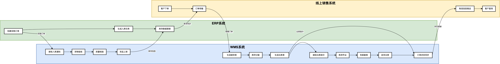
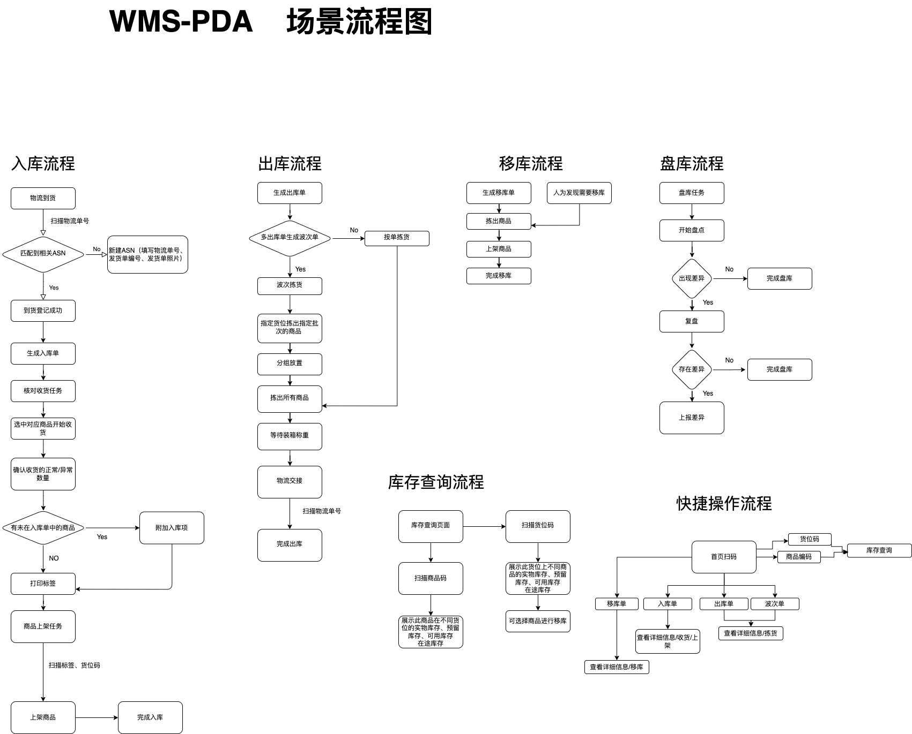
根据需求对应的功能板块，使用卡片分类法推演出合理的信息架构
预约到货通知
入库单
提货单
出库单
商品管理
品牌管理
分类管理
库存控制
移库管理
盘库管理
批次管理
库存成本
数据看板
货位管理
库区管理
成员配置
权限设置
字典配置
个人信息
安全设置
在搭建此系统的B端组件库后，输出了PC端和PDA端的所有原型设计

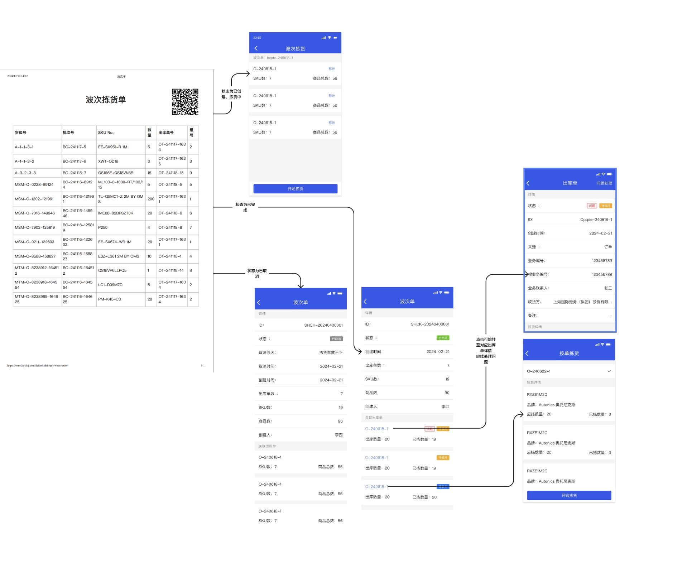
导航至不同页面
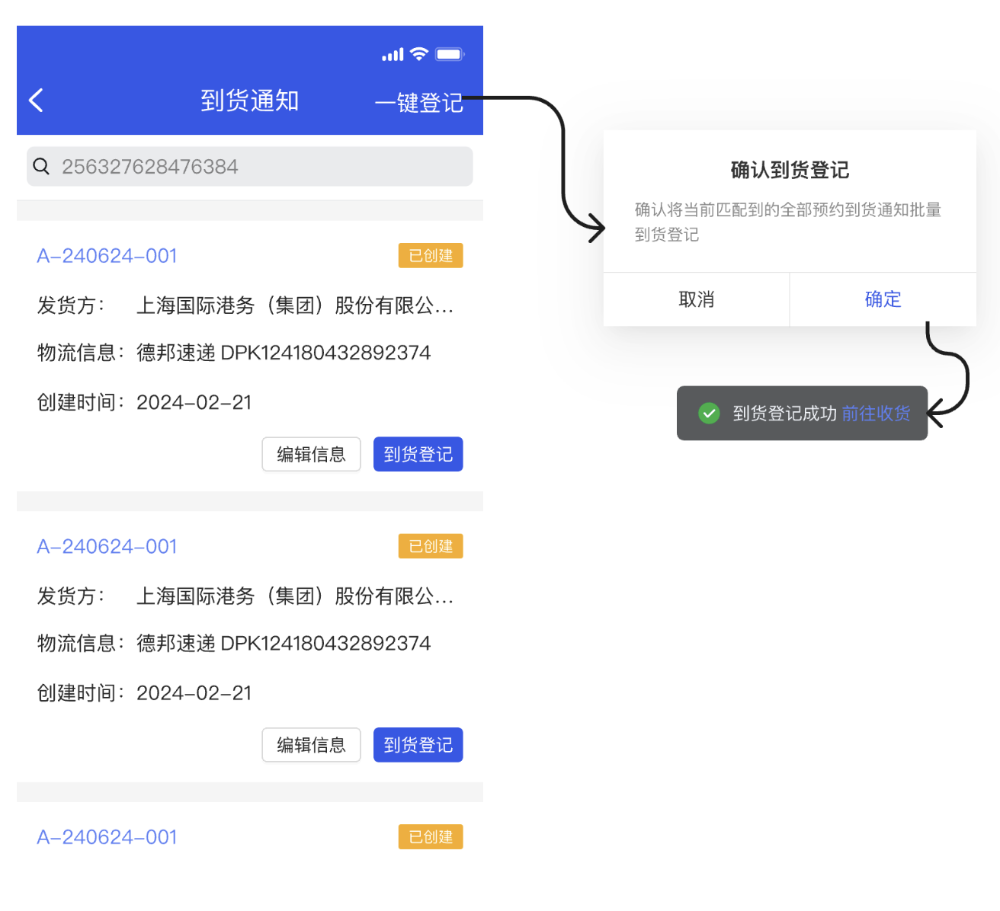
到货登记后快捷入口可直接收货
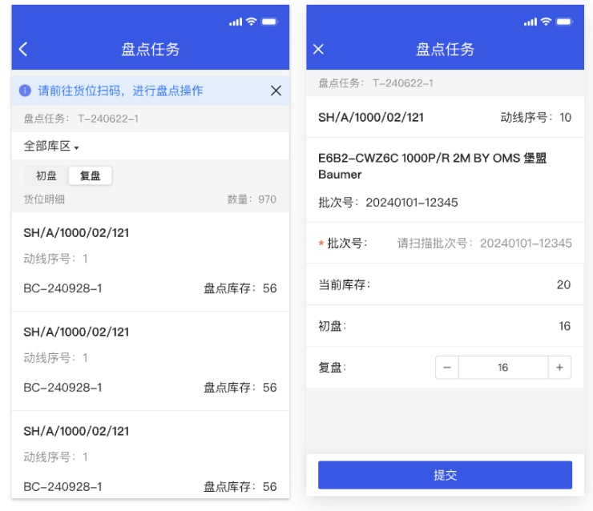
复盘数字预填写，节省用户时间
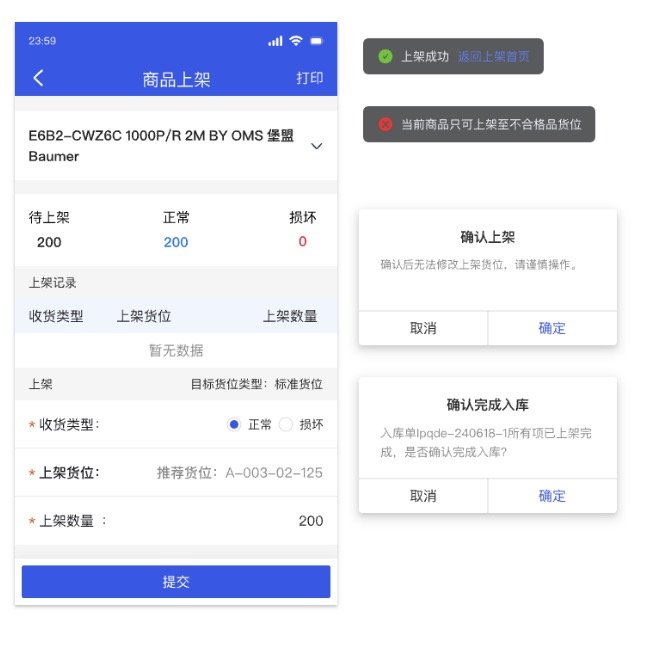
最后一项完成时自动告知确认完成
错误提示清晰告知错误原因
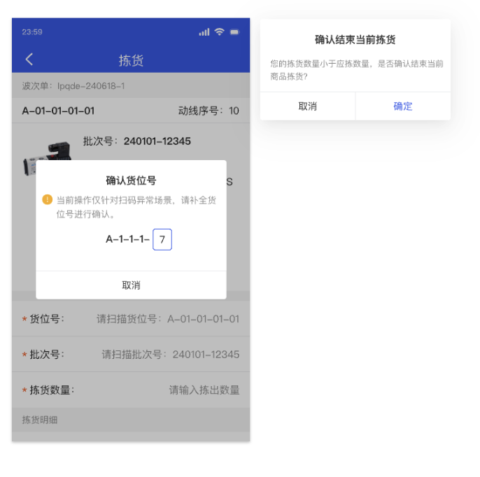
拣货数量异常时增加二次确认提示
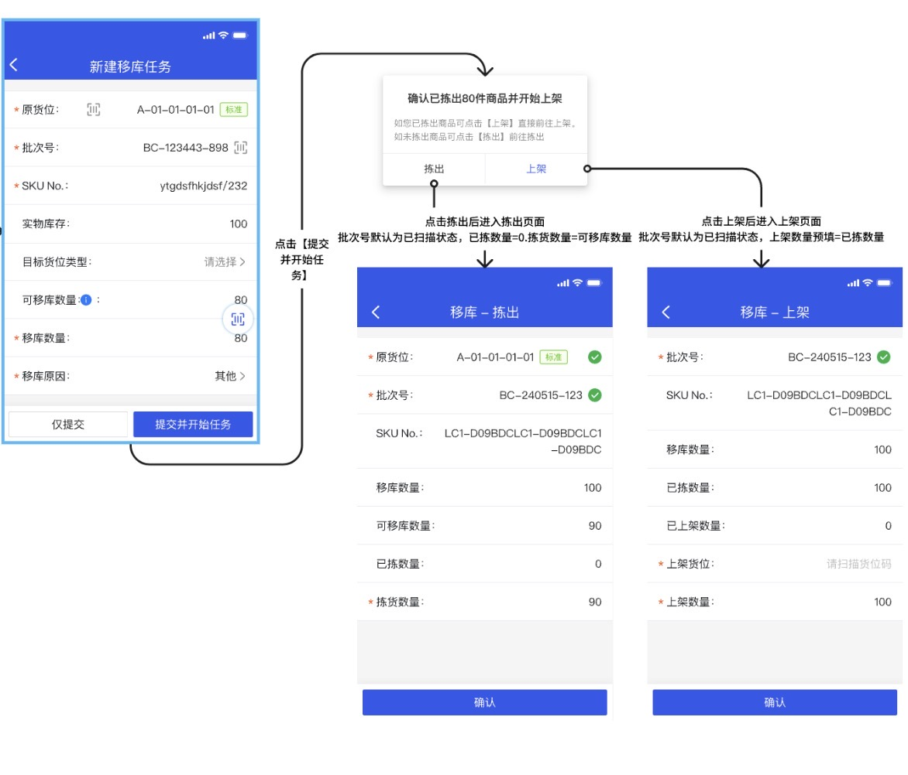
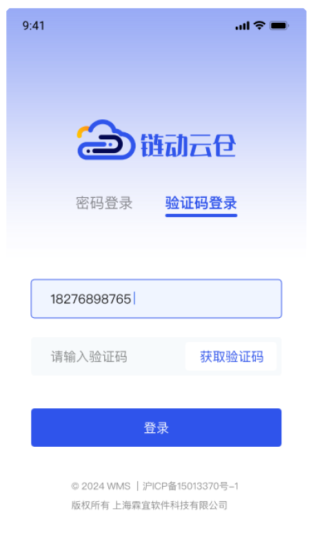
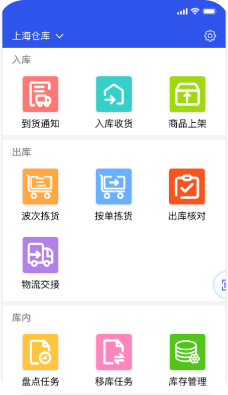
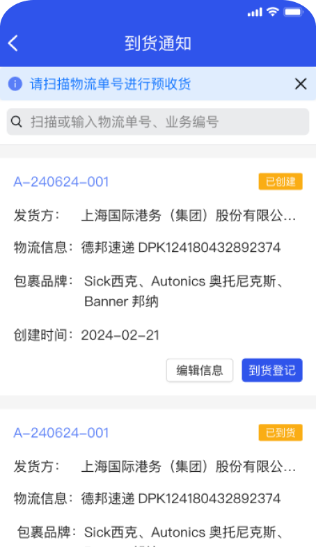
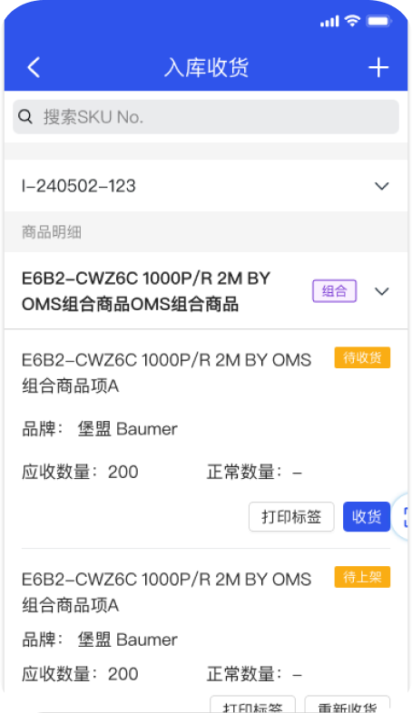
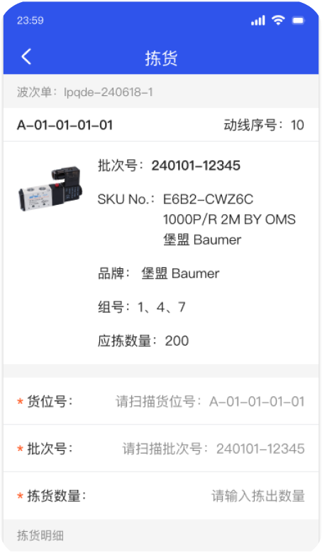
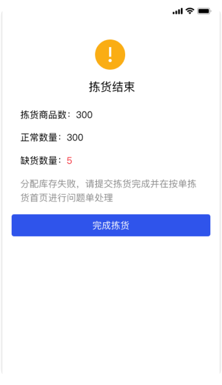
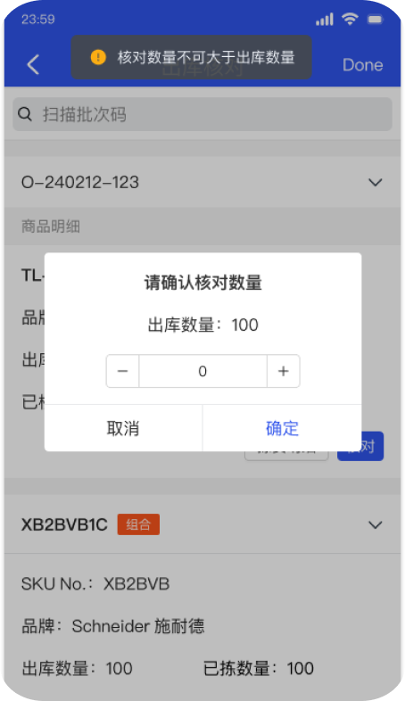
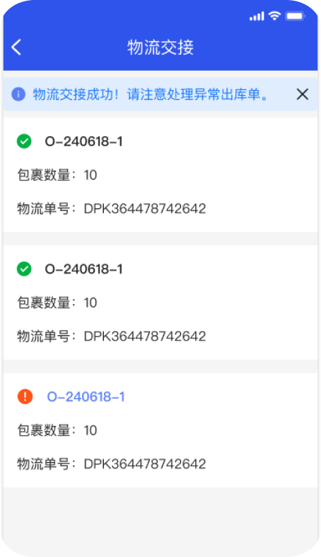
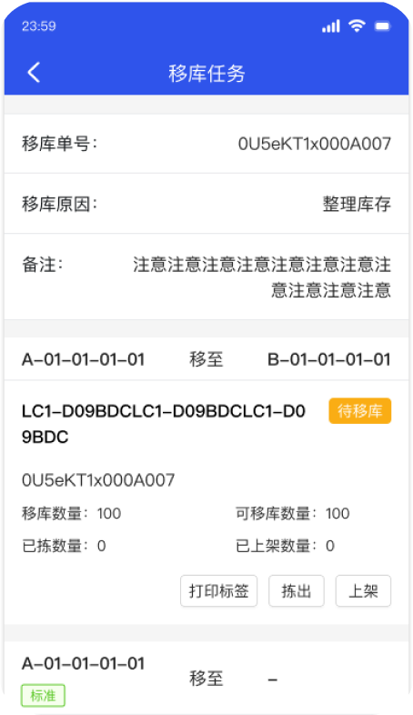
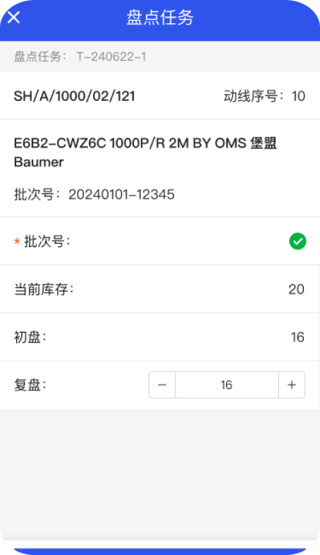
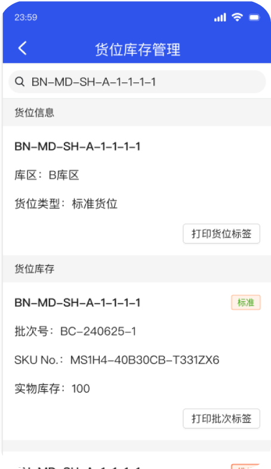
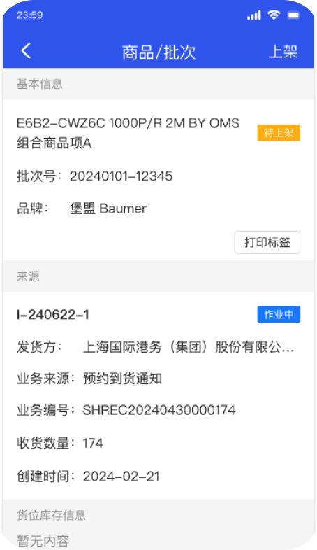
测试后优化点总结
• 包裹在已到货后，收货时难以和包裹对应 → 入库单与物流单号对接，扫描可识别
• 收货时多收货品上架暂存库，但排序过于靠后 → 附加入库项时默认选择暂存库
• 小屏幕展示不下看不到必填提示以为是卡住 → 提交时聚焦至未填位置
• 收货时和打印标签分为两步，容易忘记 → 收货时直接给出打印标签的操作
• 上架时货位类型不明确 → 视觉效果加深
• 盘点结束后需要手动确认完成 → 自动弹出确认弹窗
完成了基础库内作业功能的开发后，我们率先使用测试版本进行了实地演练。 并使用可用性测试法，交由仓库人员完成出库、入库、盘点等任务，在此过程中记录卡顿点、用户疑问以及用户表达
在产品上线后，我收集多方反馈，整理需求并快速分析需求给出设计方案，推动两天一次的快速迭代， 保证新系统的使用体验和运行质量。同时开始规划大版本迭代
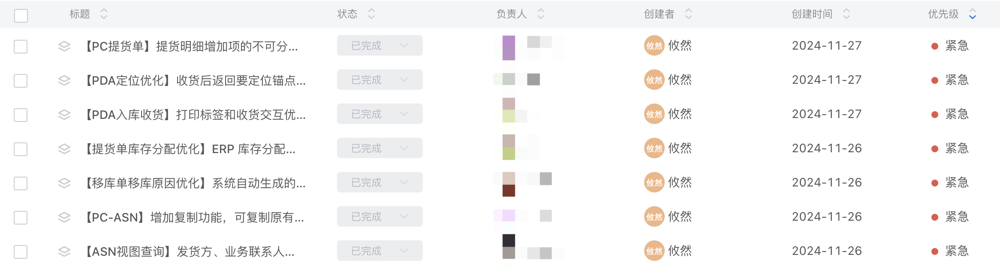
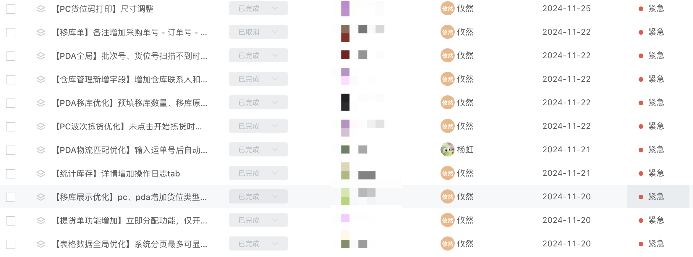
WMS仓储管理系统
产品 / UX / UI DESIGN · PC & PDA · 链动云仓